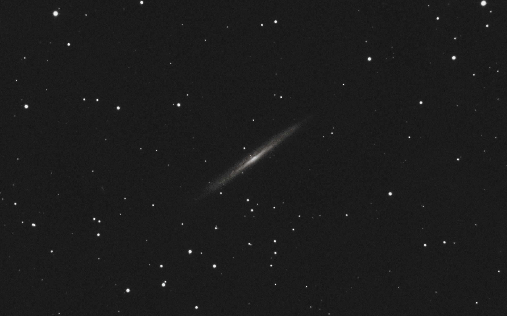
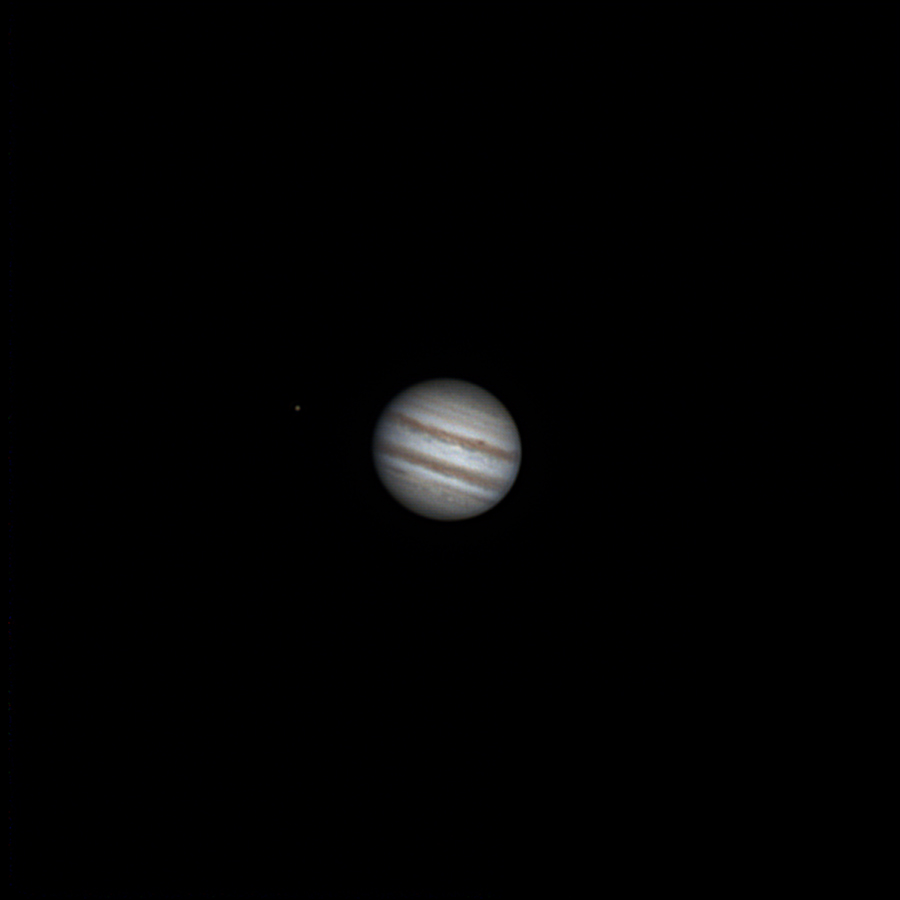
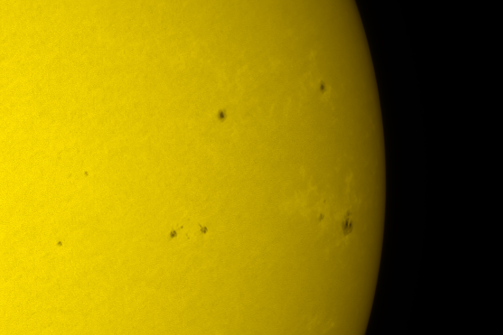
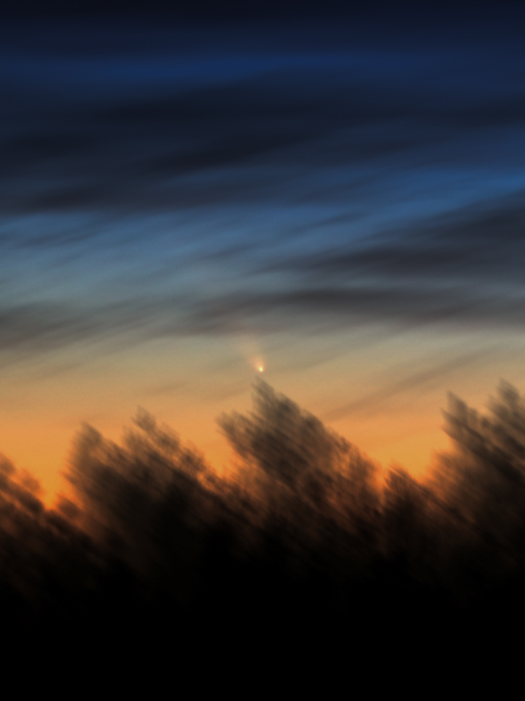
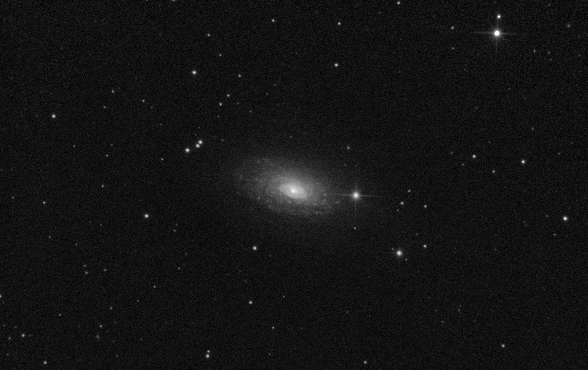
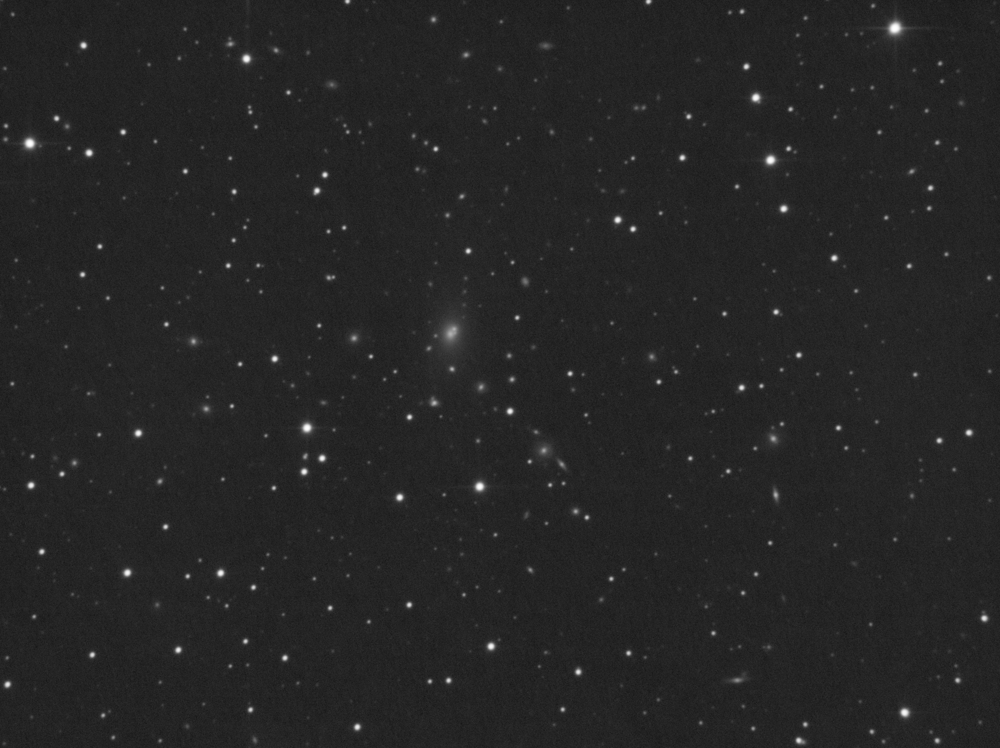

Добро пожаловать в моё космическое портфолио!
Здесь вы найдете мои лучшие астрофотографии.
Мои работы

Астероид (186822) 2004 FE31
Телескоп: Sky-Watcher 130PDS • Выдержка: 145 минут • Дата: 23.08.2026

Сверхновая SN 2026sqf в галактике NGC3310
Телескоп: Sky-Watcher 130PDS • Выдержка: 60 минут • Дата: 30.07.2026

Галактика лезвие ножа (NGC5906)
Телескоп: Sky-Watcher 130PDS • Выдержка: 120 минут • Дата: 30.07.2026

Планета Юпитер
Телескоп: Sky-Watcher 130PDS • Дата: 02.05.2026

Звезда Солнце
Телескоп: Sky-Watcher 130PDS • Дата: 15.08.2025

Лунное затмение
Телескоп: Sky-Watcher 130PDS • Дата: 07.09.2025

Комета С/2023 A3
Камера: Canon 700D • Объектив: 15-55mm • Дата: 12.10.2024

Комета С/2023 A3
Телескоп: Sky-Watcher 130PDS • Дата: 18.10.2024

Туманность кольцо (M57)
Телескоп: Sky-Watcher 130PDS • Выдержка: 105 минут • Дата: 23.10.2024

Галактика Подсолнух (M63)
Телескоп: Sky-Watcher 130PDS • Выдержка: 60 минут • Дата: 02.08.2025

Галактика Сигара (M82)
Телескоп: Sky-Watcher 130PDS • Выдержка: 28 минут • Дата: 31.05.2025

Скопление галактик (NGC6166)
Телескоп: Sky-Watcher 130PDS • Выдержка: 142 минуты • Дата: 03.08.2025

Планетарная туманность (Abell 39)
Телескоп: Sky-Watcher 130PDS • Выдержка: 52 минуты • Дата: 03.08.2025